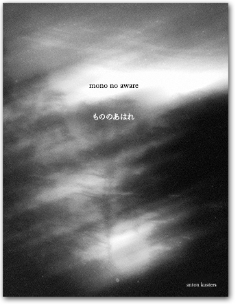
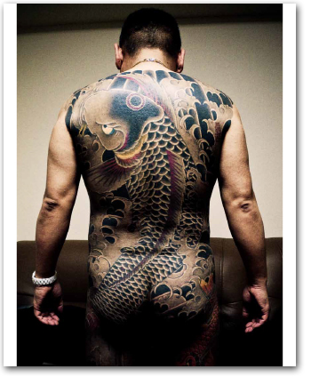
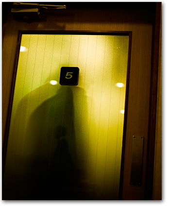

an independent creative collaboration between two brothers

publication date: July 15, 2014
ISBN 9789491270000
first edition
size: 200mm x 260mm (or 7.9″ x 10.2″)
64 pages, full color
hardcover
paper: Arctic Volume High White 115, 150 & 250g/m2
cover paper: Eska Black 1.25mm
contents:
32 principal images of the MONO NO AWARE project
price:
50€ (standard edition version)
250€ (limited edition version)
>>> more info here

publication date: October 30, 2011
ISBN 9789412700012
second edition
size: 226mm x 279,5mm (or 8.9″ x 11″)
216 pages, full color
softcover, 8 pages
paper: Symbol Tatami Ivory 1.3, 135g/m²
cover paper: Invercote G white, 300g/m²
contents:
87 principal images of the ODO YAKUZA TOKYO project
14 reproductions of Japanese calligraphy by Ginryu
price:
SOLD OUT (Nov 1, 2013)
>>> more info here

publication date: June 17, 2011
ISBN 9789412700005
first – limited – edition (500 numbered copies)
size: 226mm x 279,5mm (or 8.9″ x 11″)
216 pages, full color
softcover, 8 pages
paper: Symbol Tatami Ivory 1.3, 135g/m²
cover paper: Invercote G white, 300g/m²
Otabind LayFlat binding
contents:
88 principal images of the ODO YAKUZA TOKYO project
14 reproductions of Japanese calligraphy by Ginryu
price:
SOLD OUT (July 15, 2011)
>>> more info here